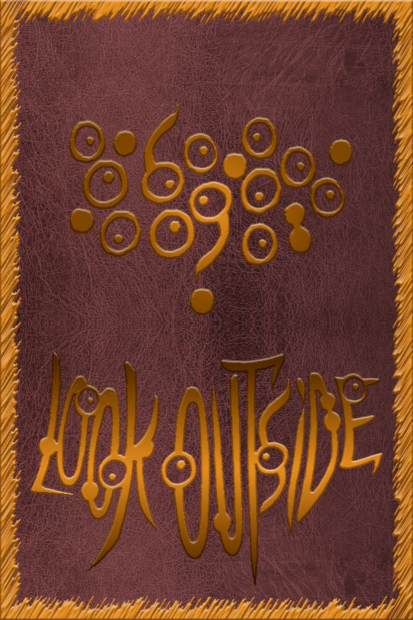

Look Outside
Every archived year-end list appearance, including placement and points earned.
About the Game
Look Outside is a survival horror RPG set in a single apartment building. A mysterious event turns anyone who looks out the window into grotesque monsters, leaving the world in absolute chaos. Scavenge the building to seek food, supplies, and weapons while encountering strange characters - human and otherwise.Survival Horror & Resource ManagementPlan tense expeditions outside your apartment as you fend off grotesque monsters dwelling in and around your building. Return to your home with gathered resources and partial answers to your questions to recuperate by playing games, making dinner, crafting tools, and getting to know your neighbors turned allies. Inventive Turn-Based CombatClash with over 150 hand-crafted creatures in turn-based combat that accounts for space between you and your foes as you wield makeshift weapons and items you've gathered in the corridors of the building. Impeccable Body Horror AestheticMeet your macabre fate in a bizarre world teeming with an unconventional and occasionally psychotic cast of characters - some of which you can recruit and offer safe harbor in your apartment as the mystery unravels. Small, Experimental, and Unwaveringly WeirdOffering 3 - 6 hours of playtime with a dozen boss encounters, friends to recruit, and visitors to invite back to your home, Look Outside offers different experiences for every player on their way to uncover several different endings.
| Released | 2025-03-20 |
|---|---|
| Developer | Francis Coulombe |
| Publisher | Devolver Digital |
| Genres | Adventure, RPG |
| Platforms | PC |
SingleplayerSteam AchievementsSteam CloudAtmosphericRPG2DHorrorGoreExplorationViolentPixel GraphicsDark
Game information provided by RAWG.
Points by Year
List History
| Year | Source | List | Placement | Points |
|---|---|---|---|---|
| 2025 | GameRant | Top 10 Best Games of 2025 List | 9 | 5 |
| 2025 | NPR | The best games of 2025, picked by NPR's staff | Unranked | 1 |